25+ Christmas Pie Recipes for a Sweet Holiday Table
📌 Save to Pinterest
Christmas dinner ends at the pie table. This roundup gathers twenty-five Christmas pie recipes — classic apple, pumpkin and pecan pies, silky cream pies, bright meringues, hand pies and galettes — all made for a sweet holiday table. Bake one showpiece the day before, add a chilled cream pie that waits in the fridge, and let everyone take the slice they have been waiting for.
How to plan a Christmas pie table
Pick a mix, not a single style: one classic double-crust pie, one chilled or cream pie, and one hand pie or tart cover every taste. If the day is busy, lean on pies that wait — chilled cream pies, chiffon pies and make-ahead hand pies. If you are feeding a crowd, bake two different pies instead of one big one, and set out whipped cream, vanilla ice cream and a pot of coffee so everyone builds their own plate. And if you want the house to smell like Christmas before anyone sits down, start with cinnamon, ginger and brown sugar.
Good to know: Everything is written in American English, and measurements use US customary units — cups, tablespoons, and Fahrenheit — for cooks in the United States. Always follow safe food-handling guidance, and check labels for allergens when cooking for others.
Food safety: The eggs in these pies are baked through — bake until set and golden. For egg dishes, the USDA safe temperature is 160°F (71°C)..
Classic holiday pies
The pies everyone asks for first — apple, pumpkin, pecan and cherry, baked the way they have always been baked.
1. Classic Apple Pie

This is the pie every Christmas table needs: tart-sweet apples tossed with cinnamon and nutmeg, piled high under a golden, flaky double crust. The filling bubbles and thickens as it bakes, while the apples soften just enough to hold their shape. Serve it warm with vanilla ice cream or a slice of sharp cheddar, the old-fashioned way.
Ingredients
- 2 pie crusts
- 6 apples
- 3/4 cup sugar
- 2 tbsp flour
- 1 tsp cinnamon
- 1/4 tsp nutmeg
- 1 tbsp lemon juice
- 2 tbsp butter.
Directions
- Preheat the oven to 425°F. Peel, core, and thinly slice the apples into a large bowl.
- Add the sugar, flour, cinnamon, nutmeg, and lemon juice to the apples and toss until every slice is evenly coated. Let the mixture stand for 10 minutes so the apples release some juice.
- Fit one pie crust into a 9-inch pie dish and trim the overhang.
- Fill the crust with the apples, mounding them in the center, and dot with the butter.
- Cover with the second crust, trim and crimp the edges to seal, and cut slits in the top for steam.
- Set the pie on a baking sheet and bake for 45 minutes, until the crust is deep golden and the filling is bubbling through the slits.
- Cool at least 30 minutes before slicing so the filling sets. Serve warm or at room temperature.
2. Dutch Apple Crumb Pie
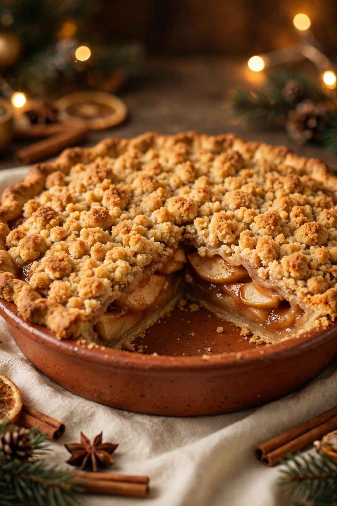
This pie trades the top crust for a thick, buttery streusel that bakes into crisp, golden crumbs over warm spiced apples. The filling stays soft and juicy underneath, scented with cinnamon and vanilla, while the topping adds crunch in every bite. It is the easiest apple pie on this list, and it always disappears first.
Ingredients
- 1 pie crust
- 6 apples
- 1/2 cup sugar
- 1 tsp cinnamon
- 1 cup flour
- 1/2 cup brown sugar
- 1/2 cup cold butter
- 1 tsp vanilla.
Directions
- Preheat the oven to 375°F. Peel, core, and thinly slice the 6 apples, and place them in a large bowl.
- Add the sugar, cinnamon, and vanilla to the apples and toss until the slices are evenly coated.
- Fit the pie crust into a 9-inch pie dish and spoon in the apples.
- Mix the flour and brown sugar in a bowl, then cut in the cold butter until coarse crumbs form.
- Sprinkle the crumb topping evenly over the apples, covering them all the way to the edges of the crust.
- Set the pie on a baking sheet and bake for 50 minutes, until the topping is golden brown and the apple filling is bubbling at the edges.
- Cool for at least 20 minutes before slicing, so the filling firms up. Serve warm, with whipped cream or vanilla ice cream if you like.
3. Classic Pumpkin Pie
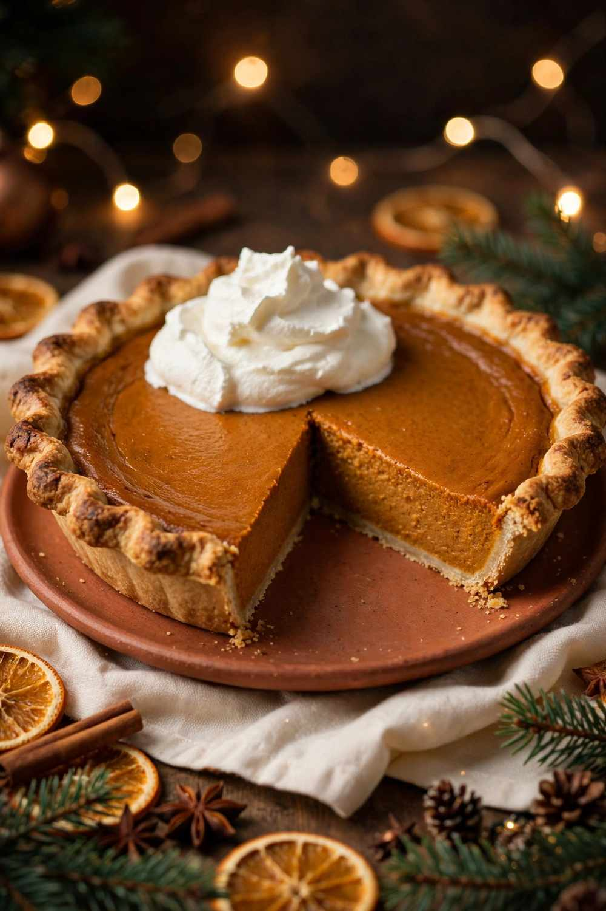
Silky, smooth, and deeply spiced, this is the pumpkin pie Christmas expects: a creamy filling of pumpkin puree, eggs, and evaporated milk, warmed with cinnamon, ginger, nutmeg, and cloves in a flaky crust. It slices cleanly and tastes like the holidays. Serve it chilled or at room temperature with a cloud of whipped cream.
Ingredients
- 1 pie crust
- 1 can (15 oz) pumpkin puree
- 3/4 cup sugar
- 2 eggs
- 1 cup evaporated milk
- 1 tsp cinnamon
- 1/2 tsp ginger
- 1/4 tsp nutmeg
- 1/4 tsp cloves.
Directions
- Preheat the oven to 425°F. Unroll the pie crust into a 9-inch pie dish, pressing it into the bottom and sides, and crimp the edges.
- In a large bowl, whisk together the pumpkin puree, sugar, and eggs until smooth and fully combined.
- Whisk in the evaporated milk, cinnamon, ginger, nutmeg, and cloves until the filling is silky and evenly spiced, with no streaks.
- Pour the filling into the prepared crust, filling it almost to the top of the crust edge.
- Bake at 425°F for 15 minutes, then reduce the oven temperature to 350°F and bake for 40 minutes more, until the edges are set and the center still jiggles just slightly.
- Cool completely on a wire rack, at least 2 hours, so the filling firms up.
- Slice with a clean, sharp knife and serve with whipped cream.
4. Pecan Pie

This Southern classic is pure holiday indulgence: a gooey, caramel-sweet filling made with corn syrup and sugar, studded with crunchy pecan halves that toast to a deep golden brown on top. The filling sets into a soft, sliceable custard inside a flaky crust. Serve it at room temperature with whipped cream or vanilla ice cream.
Ingredients
- 1 pie crust
- 1 cup corn syrup
- 3/4 cup sugar
- 3 eggs
- 2 tbsp butter
- 1 tsp vanilla
- 1 1/2 cups pecan halves
- pinch of salt.
Directions
- Preheat the oven to 350°F. Unroll the pie crust into a 9-inch pie dish, pressing it into the bottom and sides, and crimp the edges.
- In a large bowl, whisk the corn syrup, sugar, eggs, melted butter, vanilla, and salt until smooth.
- Stir in the pecan halves until they are evenly coated in the syrup mixture.
- Pour the filling into the prepared crust, spreading the pecans into an even layer across the top.
- Bake on a baking sheet for 55 minutes, until the edges are puffed and the center is just set, jiggling only slightly.
- Cool the pie completely on a wire rack, at least 2 hours, so the filling firms up enough to slice cleanly.
- Slice with a sharp knife and serve at room temperature, with whipped cream if you like.
5. Cherry Pie

Tart, juicy cherries fill this pie, sweetened just enough and thickened so the filling holds a neat slice under a golden lattice crust. A hint of almond extract deepens the cherry flavor, and the lattice lets the bright red filling bubble through. It is the prettiest pie on the table and one of the easiest to love.
Ingredients
- 2 pie crusts
- 4 cups pitted cherries
- 1 cup sugar
- 1/4 cup cornstarch
- 1 tbsp lemon juice
- 1/2 tsp almond extract
- 1 egg for wash.
Directions
- Preheat the oven to 400°F. In a large bowl, toss the pitted cherries with the sugar, cornstarch, lemon juice, and almond extract until the cherries are evenly coated.
- Unroll one pie crust into a 9-inch pie dish, pressing it into the bottom and sides, and spoon in the cherry filling.
- Cut the second crust into strips about 1 inch wide. Weave them over the filling in a lattice pattern, then trim and crimp the edges to seal.
- Beat the egg in a small bowl and brush it lightly over the lattice strips.
- Set the pie on a baking sheet and bake for 50 minutes, until the crust is golden and the cherry filling is bubbling through the lattice.
- Cool the pie for at least 2 hours before slicing, so the filling thickens and the slices hold their shape. Serve warm or at room temperature.
Chocolate, fruit & nut pies
A little richer, a little brighter — chocolate chess, cranberry and sweet potato pies for the second slice.
6. Chocolate Chess Pie
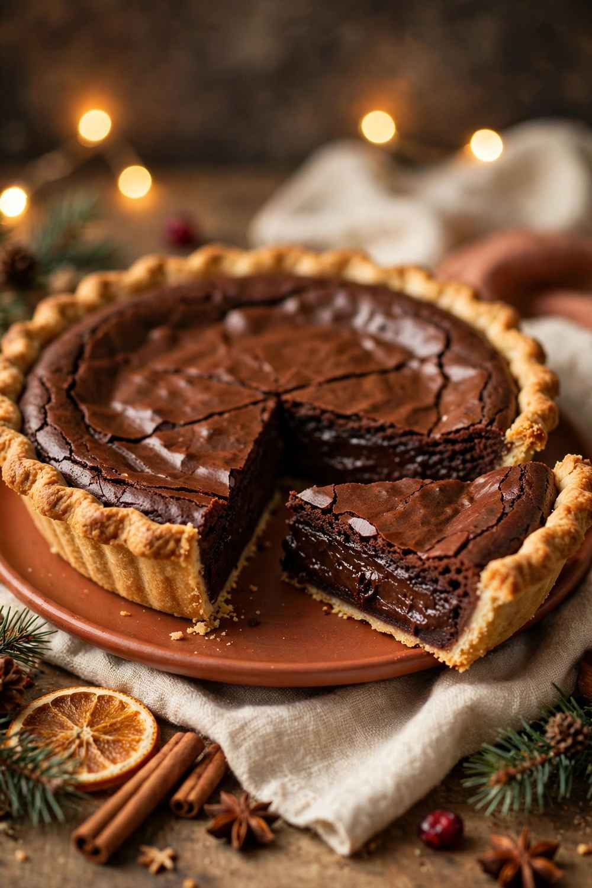
This old-fashioned chess pie is dark, rich, and fudgy, with a crackly top and a soft, brownie-like center made from cocoa, sugar, eggs, and butter. It bakes in one crust with no fuss and slices like a truffle tart. Serve it in thin slices with whipped cream or vanilla ice cream, because a little goes a long way.
Ingredients
- 1 pie crust
- 1 1/2 cups sugar
- 1/3 cup cocoa powder
- 2 eggs
- 1/2 cup butter
- 1/3 cup evaporated milk
- 1 tsp vanilla
- pinch of salt.
Directions
- Preheat the oven to 350°F. Unroll the pie crust into a 9-inch pie dish, pressing it into the bottom and sides, and crimp the edges.
- Whisk the sugar and cocoa powder in a large bowl until no lumps remain.
- Whisk in the eggs, melted butter, evaporated milk, vanilla, and salt until the filling is completely smooth and glossy.
- Pour the chocolate filling into the prepared crust, filling it almost to the top of the crust edge.
- Bake for 45 minutes, until the edges are set and puffed and the center still trembles slightly when you shake the dish gently.
- Cool the pie completely on a wire rack, at least 2 hours, so the fudgy center firms up enough to slice.
- Slice with a clean, sharp knife and serve at room temperature, with whipped cream if you like.
7. Cranberry Apple Pie

Tart cranberries burst against sweet, cinnamon-spiced apples in this festive double-crust pie, brightened with fresh orange zest. The cranberries soften and stain the filling a beautiful ruby red as it bakes, and the golden crust turns crisp. It tastes like Christmas in a slice, especially warm with vanilla ice cream.
Ingredients
- 2 pie crusts
- 4 apples
- 1 1/2 cups fresh cranberries
- 3/4 cup sugar
- 2 tbsp cornstarch
- 1 tsp cinnamon
- zest of 1 orange
- 2 tbsp butter.
Directions
- Preheat the oven to 400°F. Peel, core, and thinly slice the 4 apples, and place them in a large bowl.
- Add the cranberries, sugar, cornstarch, cinnamon, and orange zest and toss gently until evenly coated.
- Unroll one pie crust into a 9-inch pie dish, pressing it into the bottom and sides, and spoon in the fruit filling.
- Dot the top of the filling with small pieces of the butter, then lay the second crust over the top, trim the edges, and crimp to seal.
- Cut several slits in the top crust so steam can escape while the pie bakes.
- Set the pie on a baking sheet and bake for 50 minutes, until the crust is golden and the filling is bubbling through the slits.
- Cool for at least 30 minutes before slicing, so the filling sets. Serve warm or at room temperature.
8. Sweet Potato Pie
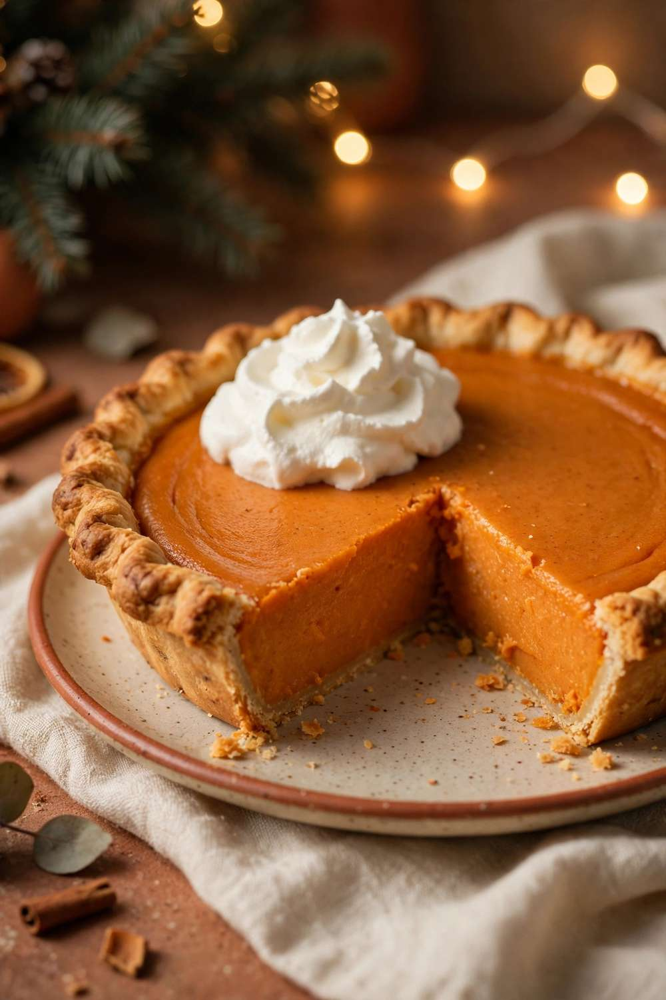
This silky pie is the Southern cousin of pumpkin pie, made with mashed sweet potatoes whipped smooth with sugar, eggs, evaporated milk, and warm spices. The filling bakes into a soft, creamy custard with a naturally sweet, earthy flavor. Serve it with whipped cream for a pie that feels both homey and special.
Ingredients
- 1 pie crust
- 2 cups mashed sweet potatoes
- 3/4 cup sugar
- 2 eggs
- 1/2 cup evaporated milk
- 1 tsp cinnamon
- 1/2 tsp nutmeg
- 1 tsp vanilla
- 2 tbsp butter.
Directions
- Preheat the oven to 350°F. Unroll the pie crust into a 9-inch pie dish, pressing it into the bottom and sides, and crimp the edges.
- Melt the butter and let it cool slightly. In a large bowl, beat the mashed sweet potatoes, sugar, eggs, evaporated milk, cinnamon, nutmeg, vanilla, and melted butter together until completely smooth and creamy.
- Scrape down the bowl and beat once more so no lumps remain.
- Pour the filling into the prepared crust, smoothing the top with a spatula.
- Bake for 55 minutes, until the filling is set at the edges and the center jiggles only slightly when you shake the dish gently.
- Cool the pie completely on a wire rack, at least 2 hours, so the custard firms up and slices cleanly.
- Serve at room temperature or chilled, with whipped cream if you like.
9. Mincemeat Pie

This old-fashioned holiday classic is all spiced fruit and warm nostalgia: rich jarred mincemeat stirred with diced apple and crunchy walnuts, baked under a golden double crust. The filling turns dark, sticky, and fragrant in the oven, with a lemon brightness that keeps it from feeling heavy. Serve it warm with hard sauce or vanilla ice cream.
Ingredients
- 2 pie crusts
- 1 jar (27 oz) mincemeat
- 1 apple
- 1/2 cup chopped walnuts
- 1 tbsp lemon juice
- 1 egg for wash
- sugar for sprinkling.
Directions
- Preheat the oven to 400°F. Peel, core, and finely dice the apple, and place it in a large bowl.
- Stir in the mincemeat, walnuts, and lemon juice until evenly combined.
- Unroll one pie crust into a 9-inch pie dish, pressing it into the bottom and sides, and spoon in the mincemeat filling.
- Lay the second crust over the filling, trim the edges, and crimp them together to seal.
- Beat the egg in a small bowl and brush it over the top crust, then sprinkle generously with sugar. Cut several slits in the top so steam can escape.
- Set the pie on a baking sheet and bake for 40 minutes, until the crust is deep golden and the filling is bubbling at the slits.
- Cool for at least 30 minutes before slicing, so the filling sets. Serve warm or at room temperature.
10. Apple Cranberry Tart
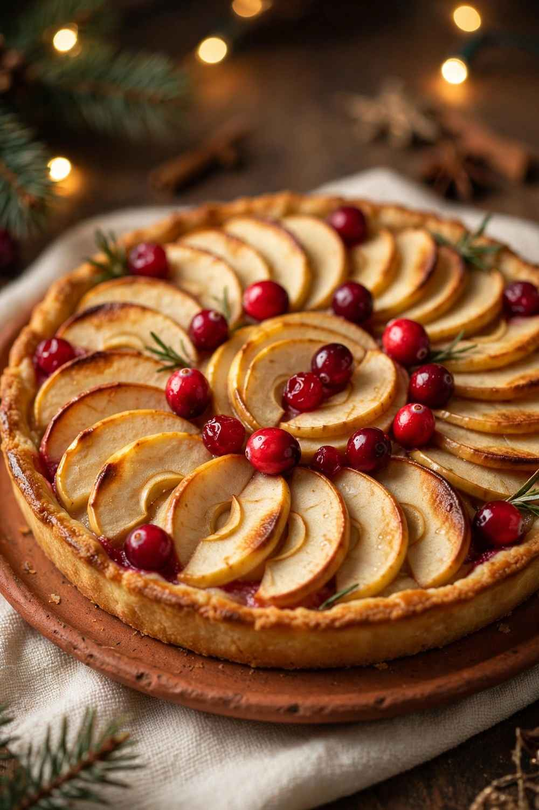
This shallow, elegant tart shows off its fruit: thin apple slices arranged in neat circles over a crisp crust, scattered with glossy cranberries and finished with a warm apricot glaze. It looks like a bakery tart and tastes like Christmas, tart and sweet at once. Serve it in thin slices with a spoonful of whipped cream.
Ingredients
- 1 tart crust
- 3 apples
- 1 cup fresh cranberries
- 1/2 cup sugar
- 2 tbsp butter
- 1/4 cup apricot jam
- 1 tsp cinnamon.
Directions
- Preheat the oven to 375°F. Press the tart crust into a 9-inch tart pan and set it on a baking sheet.
- Peel, core, and slice the apples very thinly. Arrange the slices in overlapping circles over the crust, starting at the outer edge and working toward the center.
- Scatter the fresh cranberries over and between the apple slices, filling the gaps.
- Sprinkle the sugar and cinnamon evenly over the fruit, then dot the top with small pieces of the butter.
- Bake for 40 minutes, until the apples are tender and the crust is golden at the edges.
- While the tart is warm, heat the apricot jam until liquid and brush it over the fruit for a glossy finish.
- Cool for at least 20 minutes before removing the tart from the pan and slicing. Serve warm or at room temperature.

Cream & meringue pies
Silky, airy and chilled — cream pies, chiffon and meringue for the lightest finish to a heavy meal.
11. Pumpkin Chiffon Pie
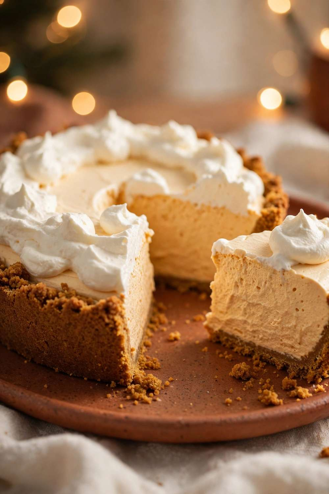
Lighter than classic pumpkin pie, this chiffon version folds whipped cream and stiffly beaten egg whites into a spiced pumpkin base, then chills it into an airy, mousse-like filling in a crunchy gingersnap crust. It is cool, creamy, and almost weightless after a heavy Christmas dinner. Serve it well chilled with extra whipped cream.
Ingredients
- 1 gingersnap crust
- 1 cup pumpkin puree
- 1/2 cup sugar
- 1 tsp gelatin
- 1/4 cup water
- 1 tsp pumpkin spice
- 1 cup whipped cream
- 2 egg whites.
Directions
- Sprinkle the gelatin over the water in a small bowl and let it bloom for 5 minutes, until it is soft and spongy.
- In a medium saucepan, warm the pumpkin puree, sugar, and pumpkin spice over medium heat, stirring, until hot but not boiling.
- Remove the pan from the heat and stir in the bloomed gelatin until it dissolves completely. Let the mixture cool to room temperature, about 20 minutes.
- Beat the egg whites in a clean bowl to stiff peaks.
- Fold the whipped cream into the cooled pumpkin, then fold in the egg whites with slow, wide strokes so the filling stays light.
- Pour the filling into the gingersnap crust and smooth the top with a spatula.
- Refrigerate for 4 hours, until the filling is fully set and holds its shape when sliced. Serve chilled, with whipped cream if you like.
12. Chocolate Cream Pie

This is chocolate comfort in a slice: a thick, silky chocolate custard cooked on the stove, poured into a baked crust, and chilled until it sets into a smooth, sliceable cream pie. A cloud of whipped cream on top makes it complete. Make it the day before, and it waits happily in the fridge until dessert.
Ingredients
- 1 pie crust
- 1 1/2 cups milk
- 3/4 cup sugar
- 1/3 cup cocoa powder
- 3 tbsp cornstarch
- 2 egg yolks
- 2 tbsp butter
- 1 tsp vanilla
- 1 cup whipped cream.
Directions
- Bake the pie crust as directed until golden, then let it cool completely in the dish.
- In a medium saucepan off the heat, whisk together the milk, sugar, cocoa powder, cornstarch, and egg yolks until smooth, with no lumps of cocoa or cornstarch.
- Cook over medium heat, stirring constantly, until it thickens into a pudding, about 8 to 10 minutes.
- Remove the pan from the heat and stir in the butter and vanilla until the butter melts and the custard turns glossy.
- Pour the hot custard into the cooled crust and smooth the top. Press plastic wrap directly onto the surface to prevent a skin.
- Refrigerate for 4 hours, until the filling is fully set and cold.
- Just before serving, remove the plastic wrap and spread or pipe the whipped cream over the top. Slice with a clean knife.
13. Lemon Meringue Pie

Bright, tangy lemon curd fills a crisp crust under a billowy cap of golden meringue in this classic pie. The sharp citrus cuts through the sweetness of the meringue, and the contrast of cool, creamy filling and toasted, marshmallow-soft peaks makes every bite lively. Serve it the day it is made, at room temperature or lightly chilled.
Ingredients
- 1 pie crust
- 1 cup sugar
- 1/4 cup cornstarch
- 1 cup water
- 1/2 cup lemon juice
- 3 egg yolks
- 2 tbsp butter
- 3 egg whites
- 1/4 tsp cream of tartar.
Directions
- Bake the pie crust as directed until golden, then let it cool. Preheat the oven to 350°F.
- In a medium saucepan, whisk together the sugar, cornstarch, water, lemon juice, and egg yolks until smooth.
- Cook over medium heat, stirring constantly, until it thickens into a glossy curd, about 8 minutes. Stir in the butter off the heat until melted.
- Pour the hot lemon filling into the baked crust and smooth the top.
- In a clean bowl, beat the egg whites with the cream of tartar to stiff, glossy peaks.
- Spread the meringue over the hot filling, sealing it all the way to the crust edge so it does not shrink.
- Bake for 15 minutes, until the meringue is golden brown on the peaks. Cool for at least 1 hour before slicing, so the filling sets.
14. Key Lime Pie
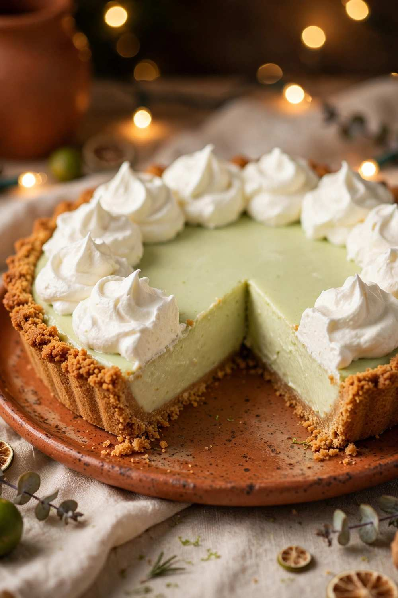
Cool, tart, and creamy, this Key lime pie is the bright note on a rich Christmas table: sweetened condensed milk and key lime juice whipped with egg yolks into a smooth, tangy filling in a buttery graham cracker crust. It chills into clean slices under a pile of whipped cream. Make it ahead and serve it cold.
Ingredients
- 1 graham cracker crust
- 1 can (14 oz) sweetened condensed milk
- 1/2 cup key lime juice
- 1 tbsp lime zest
- 3 egg yolks
- 1 cup whipped cream.
Directions
- Preheat the oven to 350°F and set the graham cracker crust on a baking sheet.
- In a large bowl, whisk together the sweetened condensed milk, key lime juice, lime zest, and egg yolks until the mixture is smooth and slightly thickened.
- Pour the filling into the graham cracker crust, spreading it into an even layer.
- Bake for 15 minutes, until the filling is just set at the edges and still slightly jiggly in the center.
- Cool the pie on a wire rack for 30 minutes, then cover loosely and refrigerate for 4 hours, until fully chilled and set.
- Just before serving, spread or pipe the whipped cream over the top. Slice with a clean, sharp knife and serve cold.
15. Bourbon Pecan Pie
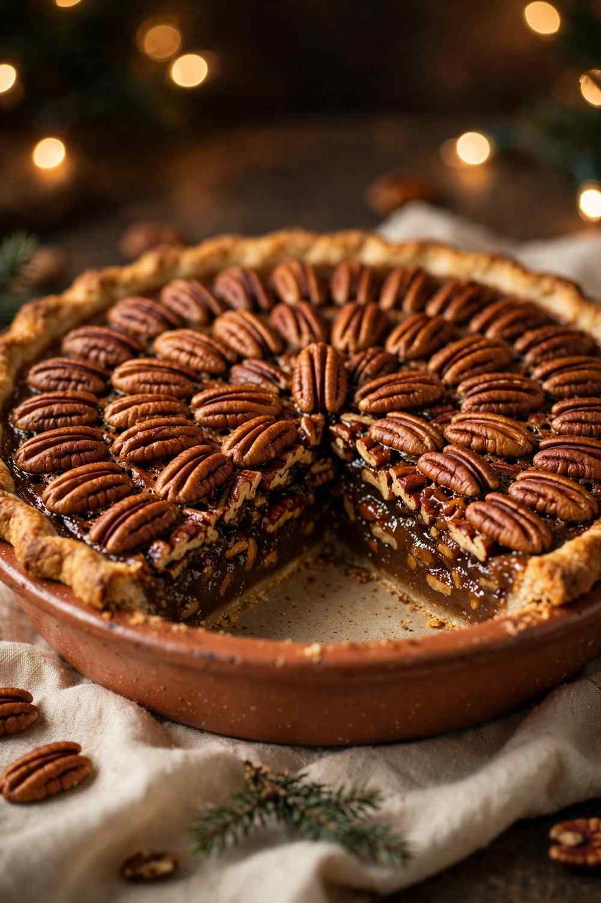
This is pecan pie with a grown-up twist: a splash of bourbon warms the gooey brown sugar filling and deepens its caramel flavor, while the pecan halves toast crisp on top. The filling sets soft and sliceable inside a flaky crust. Serve it at room temperature with whipped cream or a scoop of vanilla ice cream.
Ingredients
- 1 pie crust
- 1 cup corn syrup
- 3/4 cup brown sugar
- 3 eggs
- 3 tbsp bourbon
- 2 tbsp butter
- 1 tsp vanilla
- 1 1/2 cups pecan halves.
Directions
- Preheat the oven to 350°F. Unroll the pie crust into a 9-inch pie dish, pressing it into the bottom and sides, and crimp the edges.
- In a large bowl, whisk the corn syrup, brown sugar, eggs, bourbon, melted butter, and vanilla until smooth.
- Stir in the pecan halves until they are evenly coated in the syrup mixture.
- Pour the filling into the prepared crust, spreading the pecans into an even layer across the top.
- Set the pie on a baking sheet and bake for 55 minutes, until the filling is puffed at the edges and the center is just set, jiggling only slightly when you shake the dish gently.
- Cool the pie completely on a wire rack, at least 2 hours, so the filling firms up enough to slice cleanly.
- Slice with a sharp knife and serve at room temperature, with whipped cream if you like.
Hand pies, galettes & tarts
Small, rustic and easy to serve — hand pies and galettes that need no slicing at the table.
16. Apple Hand Pies

These little hand pies are Christmas apple pie you can hold: flaky pastry wrapped around a soft, cinnamon-spiced apple filling, brushed with egg wash and sprinkled with sugar until golden. They bake fast, travel well, and need no plate or fork. Serve them warm from the oven, stacked on a platter for everyone to grab.
Ingredients
- 2 pie crusts
- 2 apples
- 1/4 cup sugar
- 1 tsp cinnamon
- 1 tbsp flour
- 1 tbsp lemon juice
- 1 egg for wash
- sugar for sprinkling.
Directions
- Preheat the oven to 400°F and line a baking sheet with parchment paper.
- Peel, core, and finely dice the apples. Cook them with the sugar, cinnamon, flour, and lemon juice over medium heat, stirring, until just soft, about 5 minutes. Cool completely.
- Unroll the pie crusts on a lightly floured surface and cut them into rounds about 4 inches across.
- Spoon a small mound of filling onto one half of each round, leaving a border.
- Fold the dough over the filling and press the edges together with a fork to seal. Cut a small slit in the top of each hand pie.
- Arrange the hand pies on the baking sheet, brush them with beaten egg, and sprinkle with sugar.
- Bake for 20 minutes, until the pastry is puffed and golden brown. Cool for 10 minutes on the sheet before serving warm.
17. Cherry Hand Pies
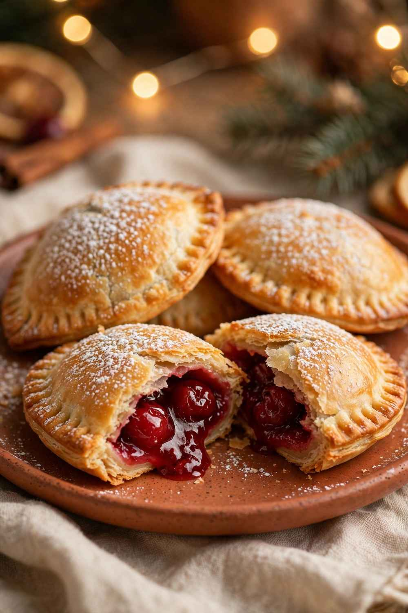
Sweet-tart cherry filling with a whisper of almond sits inside crisp, golden pastry in these little hand pies. They are the easiest hand pie on this list, made with canned cherry pie filling, and they bake up bubbling and sugary in just 20 minutes. Serve them warm, dusted with sugar, for a handheld dessert that disappears fast.
Ingredients
- 2 pie crusts
- 1 can (21 oz) cherry pie filling
- 1 tsp almond extract
- 1 egg for wash
- sugar for sprinkling.
Directions
- Preheat the oven to 400°F and line a baking sheet with parchment paper.
- Spoon the cherry pie filling into a bowl and stir in the almond extract until evenly mixed.
- Unroll the pie crusts on a lightly floured surface and cut them into rounds about 4 inches across.
- Spoon a small mound of the cherry filling onto one half of each round, leaving a border around the edge.
- Fold the dough over the filling and press the edges together firmly with a fork to seal. Cut a small slit in the top of each hand pie.
- Arrange the hand pies on the baking sheet, brush them with beaten egg, and sprinkle with sugar.
- Bake for 20 minutes, until the pastry is golden brown and the cherry filling is bubbling at the slits. Cool for 10 minutes on the sheet before serving warm.
18. Rustic Apple Galette
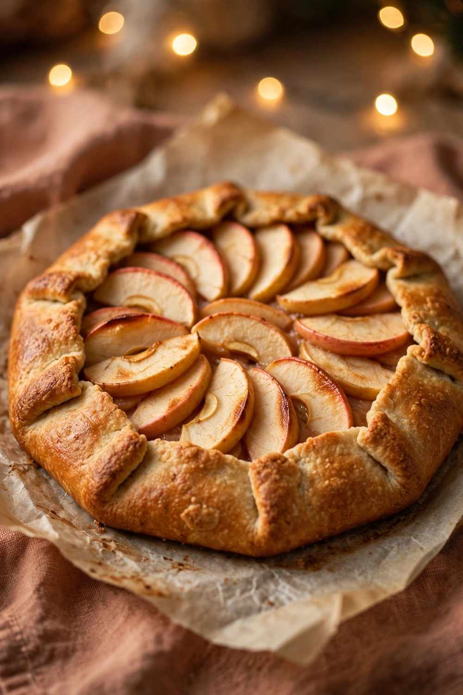
This free-form galette is apple pie without the fuss: sliced apples tossed with cinnamon and sugar, piled onto a single crust, and folded up around the edges into a rustic, golden round. No pie dish is needed, and the open top lets the apples caramelize at the edges. Serve it warm, in generous wedges, with vanilla ice cream.
Ingredients
- 1 pie crust
- 3 apples
- 1/4 cup sugar
- 1 tsp cinnamon
- 1 tbsp flour
- 1 tbsp lemon juice
- 1 egg for wash
- 1 tbsp coarse sugar.
Directions
- Preheat the oven to 375°F and line a baking sheet with parchment paper.
- Peel, core, and thinly slice the apples. Toss them in a bowl with the sugar, cinnamon, flour, and lemon juice until evenly coated.
- Unroll the crust onto the baking sheet and arrange the apples in the center, leaving a 2-inch border.
- Fold the border of crust up and over the edges of the apples, pleating it loosely as you go, so the center stays open.
- Beat the egg in a small bowl and brush it over the folded crust edges, then sprinkle the coarse sugar over the crust.
- Bake for 40 minutes, until the crust is deep golden and the apples are tender and bubbling.
- Cool for at least 15 minutes on the baking sheet before sliding the galette onto a board and slicing. Serve warm.
19. Pear Almond Tart
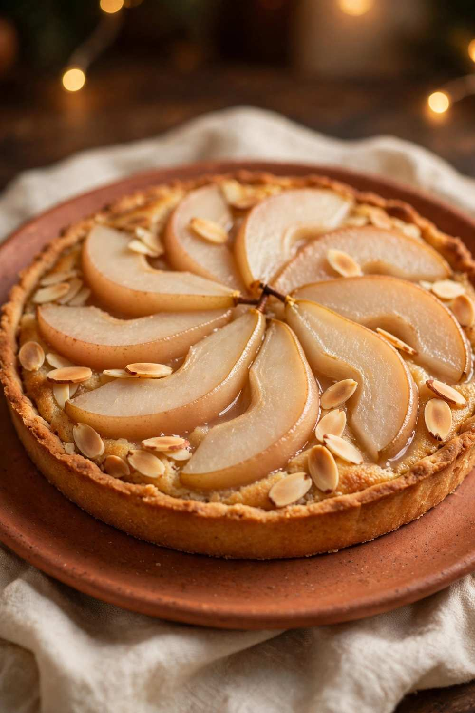
Poached pears rest on a soft almond frangipane in this elegant tart, with sliced almonds scattered over the top for crunch. The frangipane bakes into a moist, nutty cushion under the tender pears, and the whole tart turns golden in the oven. It is the most refined dessert on this list, and it slices beautifully.
Ingredients
- 1 tart crust
- 3 pears
- 1/2 cup almond flour
- 1/4 cup sugar
- 1/4 cup butter
- 1 egg
- 1/2 tsp almond extract
- sliced almonds.
Directions
- Preheat the oven to 375°F. Press the tart crust into a 9-inch tart pan with a removable bottom and set the pan on a baking sheet.
- Let the butter soften to room temperature, then beat it in a bowl with the almond flour, sugar, egg, and almond extract until smooth and creamy. This is the frangipane.
- Spread the frangipane evenly into the tart crust.
- Peel, core, and thinly slice the pears. Arrange the slices in overlapping circles over the frangipane, pressing them down gently.
- Sprinkle sliced almonds over the top of the tart.
- Bake for 35 minutes, until the frangipane is puffed and golden and the pears are tender.
- Cool for at least 20 minutes before removing the tart from the pan and slicing. Serve warm or at room temperature.
20. Cranberry Pear Pie

Juicy, buttery pears meet jewel-red cranberries in this double-crust pie, spiced with cinnamon and ginger. The pears soften into a tender filling while the cranberries burst and stain it rosy, and the golden crust keeps it all together. It is a bright, wintry pie that looks as good as it tastes. Serve it warm.
Ingredients
- 2 pie crusts
- 4 pears
- 1 1/2 cups fresh cranberries
- 3/4 cup sugar
- 2 tbsp cornstarch
- 1 tsp cinnamon
- 1/2 tsp ginger
- 2 tbsp butter.
Directions
- Preheat the oven to 400°F. Peel, core, and thinly slice the pears, and place them in a large bowl.
- Add the cranberries, sugar, cornstarch, cinnamon, and ginger and toss gently until evenly coated.
- Unroll one pie crust into a 9-inch pie dish, pressing it into the bottom and sides, and spoon in the fruit filling.
- Dot the top of the filling with small pieces of the butter, then lay the second crust over the top, trim the edges, and crimp to seal.
- Cut several slits in the top crust so steam can escape while the pie bakes.
- Set the pie on a baking sheet and bake for 50 minutes, until the crust is golden and the filling is bubbling through the slits.
- Cool for at least 30 minutes before slicing, so the filling sets. Serve warm or at room temperature.
Showstoppers & cozy finishes
The pies that end the meal with a flourish — chocolate, custard and spiced finishes worth saving room for.
21. Black Forest Pie
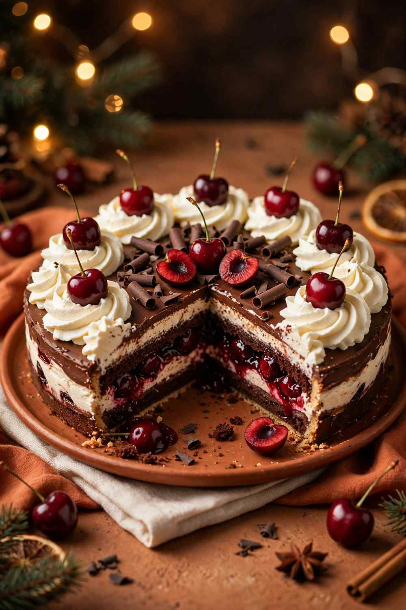
This no-bake showpiece layers sweet cherry filling and rich chocolate pudding in a chocolate cookie crust, then chills into cool, creamy slices under whipped cream, chocolate shavings, and maraschino cherries. It tastes like Black Forest cake in pie form, and it is made entirely ahead. Serve it cold, straight from the fridge.
Ingredients
- 1 chocolate cookie crust
- 1 can (21 oz) cherry pie filling
- 1 cup chocolate pudding
- 1 cup whipped cream
- 1/4 cup chocolate shavings
- maraschino cherries.
Directions
- Spoon half of the cherry pie filling into the chocolate cookie crust and spread it into an even layer.
- Spoon the chocolate pudding over the cherry layer and spread it gently into an even layer, taking care not to mix the two layers.
- Spoon the remaining cherry filling over the pudding and spread it evenly to the edges of the crust.
- Cover the pie loosely and refrigerate for 4 hours, until the layers are fully chilled and set.
- Just before serving, spread or pipe the whipped cream over the top of the pie.
- Scatter the chocolate shavings over the whipped cream and place maraschino cherries on top.
- Slice with a clean, sharp knife, wiping the blade between cuts, and serve cold.
22. Buttermilk Chess Pie
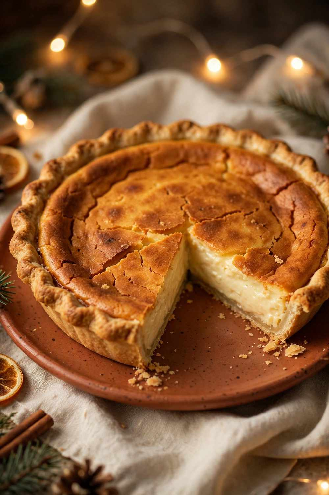
This tangy Southern classic bakes into a golden custard with a delicately crisp top, made from sugar, eggs, and buttermilk with a hint of lemon. The filling is smooth, sweet, and just tart enough to keep it from feeling heavy. It is simple, old-fashioned, and quietly perfect with a cup of coffee after Christmas dinner.
Ingredients
- 1 pie crust
- 1 1/2 cups sugar
- 3 eggs
- 1/2 cup buttermilk
- 1/4 cup butter
- 1 tbsp flour
- 1 tbsp cornmeal
- 1 tsp vanilla
- 1 tbsp lemon juice.
Directions
- Preheat the oven to 350°F. Unroll the pie crust into a 9-inch pie dish, pressing it into the bottom and sides, and crimp the edges.
- In a large bowl, whisk the sugar, eggs, buttermilk, melted butter, flour, cornmeal, vanilla, and lemon juice until smooth.
- Keep whisking until the flour and cornmeal are fully mixed in and the filling is even, with no lumps.
- Pour the filling into the prepared crust, filling it almost to the top of the crust edge.
- Bake for 50 minutes, until the top is golden and the center is just set, jiggling only slightly when you shake the dish gently.
- Cool the pie completely on a wire rack, at least 2 hours, so the custard firms up enough to slice cleanly.
- Slice with a sharp knife and serve at room temperature, with whipped cream if you like.
23. Apple Butter Pie

Deep, dark apple butter gives this pie its rich, spiced flavor, whipped with sugar, eggs, and evaporated milk into a smooth, custardy filling. It tastes like the best apple butter you have ever had, baked into a sliceable pie with a flaky crust. Serve it at room temperature with whipped cream or a drizzle of caramel.
Ingredients
- 1 pie crust
- 1 1/2 cups apple butter
- 3/4 cup sugar
- 2 eggs
- 1/2 cup evaporated milk
- 1 tsp cinnamon
- 1/2 tsp nutmeg
- 1 tsp vanilla.
Directions
- Preheat the oven to 350°F. Unroll the pie crust into a 9-inch pie dish, pressing it into the bottom and sides, and crimp the edges.
- In a large bowl, whisk together the apple butter, sugar, eggs, evaporated milk, cinnamon, nutmeg, and vanilla until completely smooth and evenly spiced.
- Scrape down the sides of the bowl and whisk once more so no streaks of apple butter remain.
- Pour the filling into the prepared crust, smoothing the top with a spatula.
- Bake for 50 minutes, until the filling is set at the edges and the center jiggles only slightly when you shake the dish gently.
- Cool the pie completely on a wire rack, at least 2 hours, so the custard firms up and slices cleanly.
- Serve at room temperature or chilled, with whipped cream if you like.
24. Cranberry Orange Cream Pie

Tart cranberry sauce folds into a smooth cream cheese filling brightened with fresh orange zest and juice, then chills in a buttery graham cracker crust. The result is a pale pink, creamy pie that is both festive and refreshing, with a bright citrus finish. Make it ahead and serve it cold, topped with whipped cream.
Ingredients
- 1 graham cracker crust
- 1 cup cranberry sauce
- 8 oz cream cheese
- 1/2 cup sugar
- zest of 1 orange
- 1 tbsp orange juice
- 1 cup whipped cream.
Directions
- Let the cream cheese soften to room temperature, about 30 minutes, so it beats smooth without lumps.
- In a large bowl, beat the softened cream cheese, sugar, orange zest, and orange juice with a mixer until completely smooth and creamy.
- Add the cranberry sauce and fold it in gently until it is streaked evenly through the cream cheese mixture.
- Fold in half of the whipped cream, using slow, wide strokes, until the filling is light and evenly pink. Save the remaining whipped cream for topping.
- Spoon the filling into the graham cracker crust and smooth the top with a spatula.
- Cover loosely and refrigerate for 4 hours, until the filling is fully set and holds its shape when sliced.
- Just before serving, spread or pipe the remaining whipped cream over the top. Slice with a clean knife and serve cold.
25. Gingerbread Pumpkin Pie

Classic pumpkin pie gets a gingerbread twist: the same silky, spiced pumpkin filling, but baked in a dark, molasses-sweet gingerbread cookie crust that adds warmth and crunch to every bite. It tastes like two Christmas desserts in one. Serve it with whipped cream and a dusting of cinnamon on top.
Ingredients
- 1 gingerbread cookie crust
- 1 can (15 oz) pumpkin puree
- 3/4 cup brown sugar
- 2 eggs
- 1 cup evaporated milk
- 1 tsp cinnamon
- 1/2 tsp ginger
- 1/4 tsp nutmeg
- 1 tsp vanilla.
Directions
- Preheat the oven to 425°F and set the gingerbread cookie crust on a baking sheet.
- In a large bowl, whisk together the pumpkin puree, brown sugar, and eggs until smooth and fully combined.
- Whisk in the evaporated milk, cinnamon, ginger, nutmeg, and vanilla until the filling is silky and evenly spiced, with no streaks.
- Pour the filling into the gingerbread crust, filling it almost to the top of the crust edge.
- Bake at 425°F for 15 minutes, then reduce the oven temperature to 350°F and bake for 40 minutes more, until the edges are set and the center still jiggles just slightly.
- Remove the pie from the oven and let it cool completely on a wire rack, at least 2 hours, so the filling firms up.
- Slice with a clean, sharp knife and serve with whipped cream.

Make-ahead & serving tips
Bake double-crust pies the day before so the filling sets and the slices stay neat — reheat slices gently in a low oven if you like them warm. Chill cream, chiffon and meringue pies for at least 4 hours so they slice cleanly, and add whipped cream just before serving. Bake hand pies and galettes the morning of the meal for the crispest crust. Most of these pies keep well: store leftovers covered in the fridge for up to 3 days, and freeze unbaked double-crust pies for up to a month.
Related articles
More roundups from the same table:
- 30+ Christmas Cookie Recipes Everyone Will Love — classic, chocolate, spiced, filled and decorated cookies.
- 25+ No-Bake Christmas Desserts for a Crowd — truffles, cheesecakes, bars and treats.
- 25+ Christmas Snowball Cookie Recipes — buttery, melt-in-your-mouth snowball cookies in every flavor, rolled in powdered sugar.
- 30+ Vintage Christmas Cookie Recipes — old-fashioned cookies from grandma's kitchen, from spritz and snickerdoodles to molasses and jam thumbprints.
Keep exploring
- Browse the Desserts & Baking roundups — cookies, cakes, pies and sweet bakes.
- Browse all six categories — breakfast, lunch and dinner, desserts, air fryer, healthy recipes, and appetizers.
- More about the kitchen — what The Tasty Recipe Co is and how it works.
About The Tasty Recipe Co: Learn how we research, organize and review our food collections — see our About Us and Editorial Policy pages.
Recipe results can vary with ingredients, equipment, and technique. See our Disclaimer for food-safety and allergy notes.